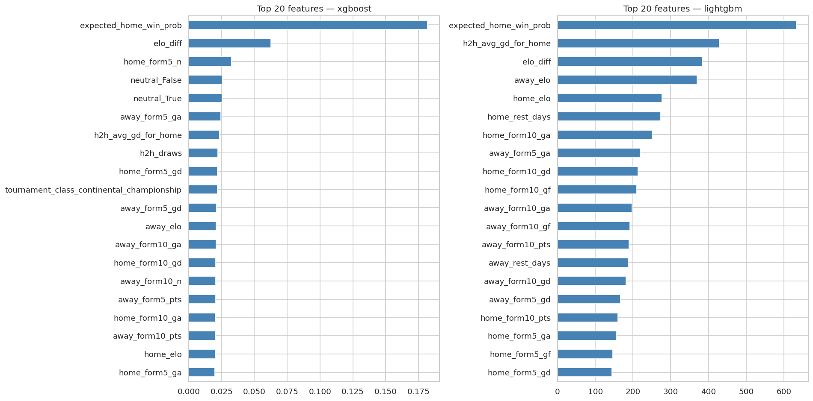
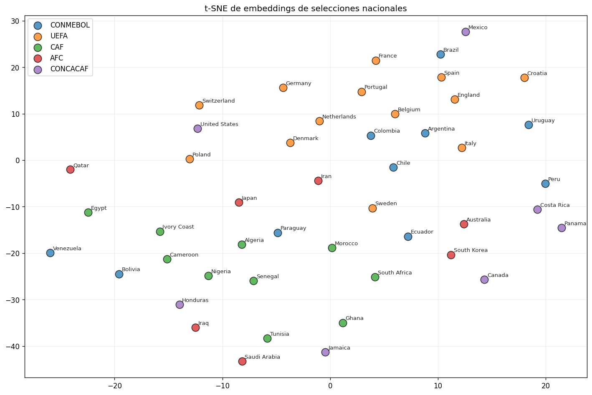
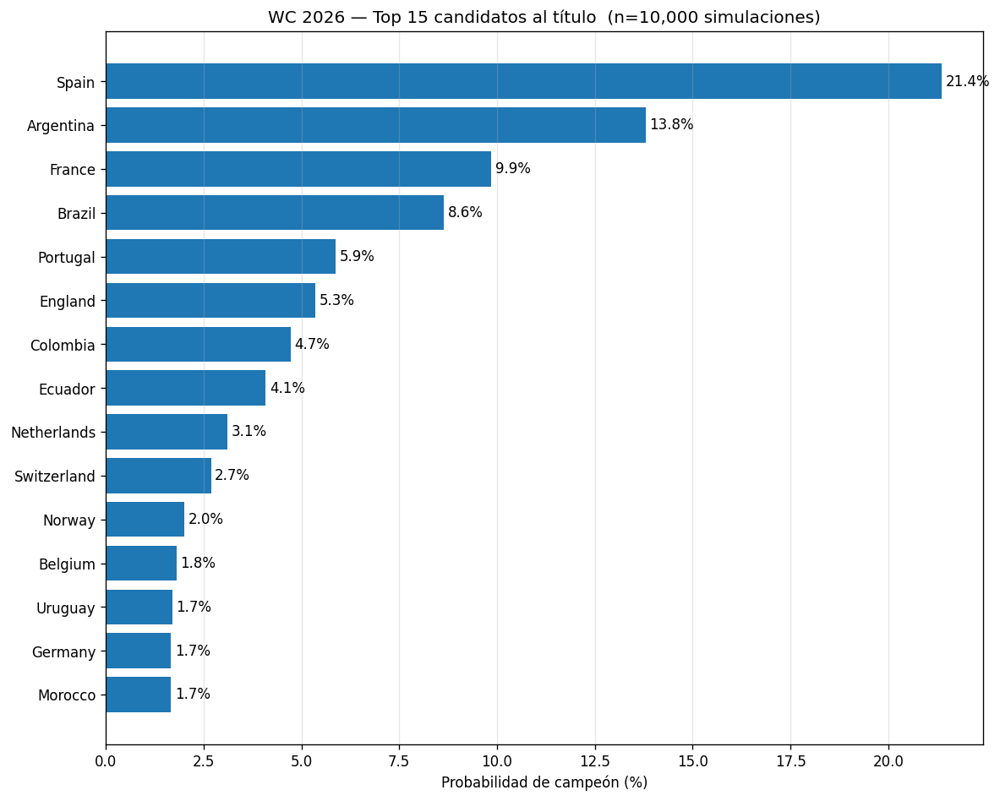
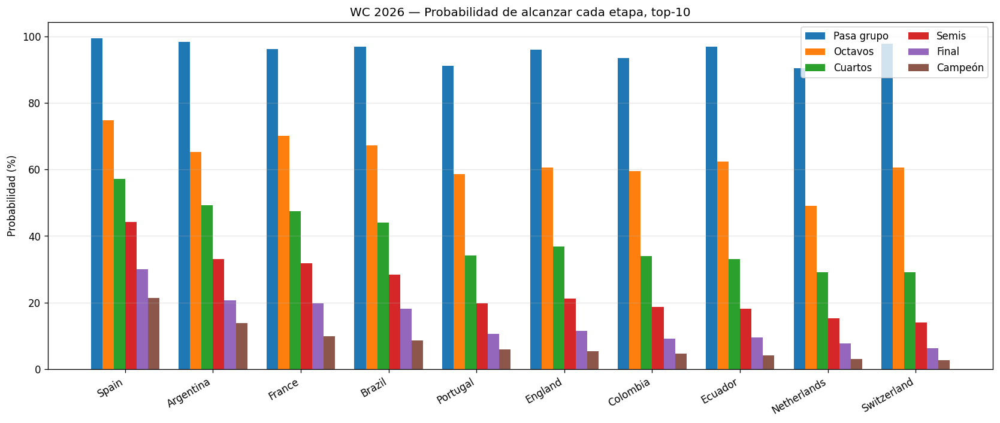
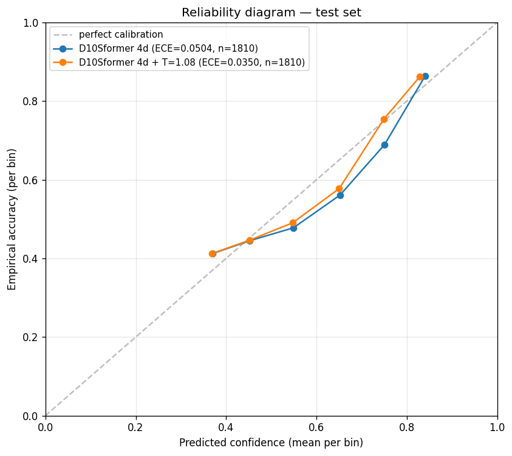
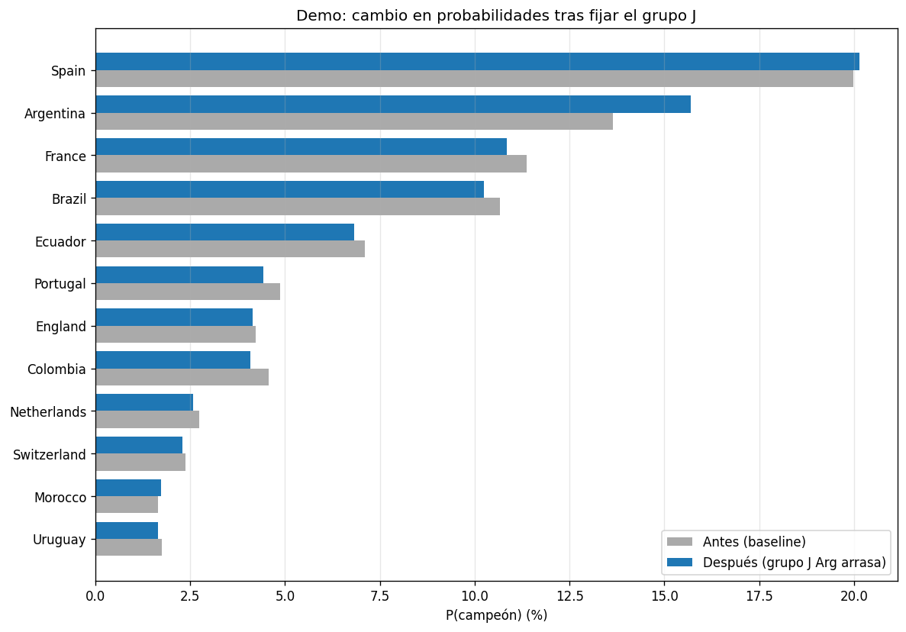

D10Sformer
Temporal Relational Transformer for football match prediction.
Messi 2012 ≠ Messi 2025
Argentina 2014 ≠ Argentina 2022
El fútbol no es identidad estática. Modelamos el deporte como un problema de embeddings contextuales,
aprendiendo estado(jugador, tiempo, contexto) usando una arquitectura Transformer.
El Motor: Transformer Encoder
Basado en arquitecturas tipo BERT, el modelo procesa eventos futbolísticos tokenizados.
Predicción de resultado (Win/Draw/Loss).
Predicción directa de goles marcados.
Regularización y robustez ante información parcial (Stochastic Masking).
Descubrimientos: El Desafío del Dato
El análisis exploratorio reveló que el fútbol es una "cola larga" de talentos y una tormenta de eventos.
- 91% de los jugadores aparecen en una sola competición, forzando el uso de embeddings genéricos por posición o buckets de calidad.
- ~3,500 eventos por partido requieren filtrado agresivo para capturar solo lo semánticamente relevante (tiros, asistencias, recuperaciones).
- Representación Vectorial: Los equipos se agrupan por estilo de juego y nivel competitivo en el espacio latente.


Predicciones: Mundial 2026
Usando simulaciones de Monte Carlo a lo largo del fixture (bracket) proyectado, calculamos las probabilidades de supervivencia en cada fase del torneo.
Probabilidades de Campeón

Probabilidades por Fase

Calibración y Live Updates
Para que las probabilidades de Monte Carlo sean válidas, el modelo debe estar calibrado. Si predice un 70% de victoria, debe ganar el 70% de las veces en la realidad.
El Diagrama de Confiabilidad (Reliability Diagram) muestra una alta correlación entre las predicciones del modelo y las fracciones reales de ocurrencia.
Live Context Injection
El modelo soporta actualizaciones en vivo inyectando nuevos contextos durante el torneo, ajustando las probabilidades en tiempo real según el desempeño observado.

